INTRO & BODY ORIENTATION
Anatomical position, sagittal plane, frontal or coronal plane, transverse plane, superior,
inferior, anterior, posterior, proximal, distal, long bone, short bone, flat bone, irregular
bone, proximal/distal epiphysis, diaphysis, compact bone, spongy bone, periosteum, endosteum, medial, lateral
medullary cavity, articular cartilage
Main regions
Head
• Neck
• Thorax
• Abdomen
• Pelvis
• Upper Limb
• Lower Limb
skeletal muscle (connective tissue), smooth muscle, cardiac muscle
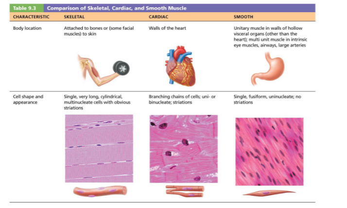
attachment, tendon (connect muscle to bone)
Long bone
- proximal/distal epiphysis, diaphysis, metaphysis, medullary cavity, articulate cartilage, periosteum
Topic: Body orientation
1. Describe the anatomical position.
2. Identify the body planes and their use in radiology.
3. Describe directional terms and describe body parts using them.
4. Describe and identify the main regions of the human body.
Topic: Types of Bones
5. Describe the types of bones and give examples.
6. Identify the structure and parts of a long bone.
Topic: Muscles
7. Describe the types of muscle.
8. Identify the structure of a skeletal muscle and the way they attach to bones.
Anatomical movement = joint involved + action
- Movement at knee = knee flexion
Shoulder complex = 4 distinct joints, sterno clavicular joint (SC), achromio clavicular (AC) joint, glenohumeral joint (shoulder joint, main ball and pocket joint), scapulothoracic joint
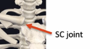
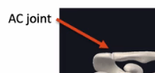
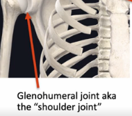
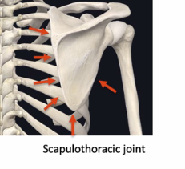
Shoulder flexion = brings arm straight forward
Shoulder extension = bring arms straight backward
Shoulder abduction: away from midline
Shoulder ADDuction: toward the midline (ADDing arms back to body)
Shoulder External rotation -> lateral, hands move out
Shoulder Internal rotation -> medial, hands move in
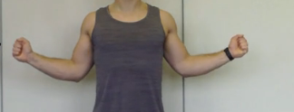
(external)
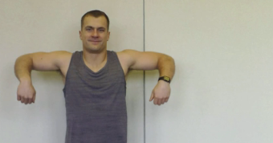
(abducted at 90 degrees)
Up in this position (external)
Down (internal)
Scapular movements
- Elevation = shrug the shoulders
- Depression = down, opposite of elevation
- Protraction = round the shoulders (away from midline)
- Retraction = squeezing shoulder blades together (opposite of protraction)
- Upward rotation -> scapula moves superior and lateral, abduction (moving up basically) along coronal line
- Need scapula to move upward for abduction to happen
- Downward rotation -> scapula moves inferior and medial (assists in ADDuction)
Elbow Joint
- Flexion, extension, pronation and supination
- Three bones (three distinct joints)
- Humeroulnar joint
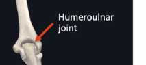
- Humeroradial joint
- Proximal radioulnar joint
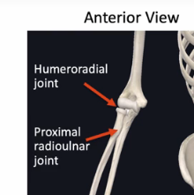
- Flexion
- Bring hand to shoulder, decrease angle between arm and forearm
- Extension: straighten arm
- Supination -> turning palms up (holding soup bowl)
- Pronation -> palms down
Wrist joint
- Flexion, extension, radial deviation, ulnar deviation
- Radius same side as thumb, ulmar same side as pinky finger
- Extension -> palm away from forearm
- Flexion -> palm toward forearm
- Radial deviation -> angling hand toward radius
- Ulnar deviation -> angling hand toward ulna (“boi”)
Fingers (phalanges)
- 14 joints
- 5 MCP joints (metacarpal phalange joints)
- 5 PIP joints (proximal interphallange joints)
- 4 DIP joints (distal interphalanges joints)
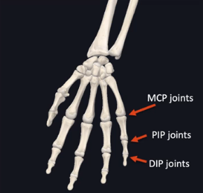
- Flexion -> curling fingers, make fist
- Extension -> straighten fingers
- Abduction -> moving finger away from midline of hand (sagitally)
- ADDuction -> moving finger toward midline of hand (sagitally)
- Shoulder joint is most mobile joint in the body
Anatomical Movements: Lower Limb and Neck
Hip -> ball and socket joint
- From head of femur and concavity in pelvis (acetabulum)
- Flexion: bringing leg straight forward (kick ball)
- Extension: bringing leg backward straight
- Abduction -> bringing leg away from midline
- ADDuction -> bringing leg toward midline
- External rotation: lateral rotation -> foot and knee point out
- Internal rotation -> medial rotation (foot and knee point IN)
- Hip rotation can also be in sitting position -> external rotation here is lateral rotation again but foot moves in (instead), and internal rotation the food moves OUT
Knee Joint
- 4 bones, femur superior, tibia and fibula inferior, patella anterior
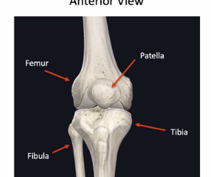
- Fibula does not directly articulate with the femur (instead is an attachment point for muscles of lower leg)
- Patella -> fulcrum for patellar tendon (allows quadricep muscles to exert immense amounts of force on the tibia)
- Flexion -> decreasing angle between femur and tibia (yippe, heel kicking butt)
- Extension -> opposite of flexion
Ankle Joint (four main joints)
- Four bones -> fibula, tibia, talus, calcaneus
- Plantarflexion: point toes down (stepping on pedal)
- Dorsiflexion (pointing toes up)
- eversion: angling sole of foot outward
- Inversion: angling sole of foot inward
Toes
- 14 joints
- 5 metatarsal phalange joints
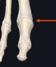
- 5 proximal interphalange joints (PIP)
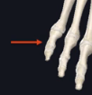
- 4 DIP (distal) joints
- Toe flexion: curling toes
- Toe extension: pointing toes up
Neck
- 7 cervical vertebrae
- Wide range of motion
- Flexion: chin to chest
- Extension: chin to sky
- Lateral flexion: ear to the shoulder
- Rotation: look to left and right
Thorax 1
Session Goal(s):
Identify, describe structures, and discuss clinical correlates of (1) chest wall (bony
components), (2) muscles of anterior chest wall and (3) associated neuro-vascular
structures, (4) ribs, intercostal muscles, diaphragm, intercostal neurovascular structures,
(5) lungs and pleura, (6) parts of the mediastinum, (7) external features and coronary
vessels of the heart, and (8) the principles of anastomosis.
Key Words:
Chest wall, sternum, cutaneous innervation, breast, axilla, muscles of the anterior chest
wall, ribs, intercostal muscles, diaphragm, intercostal neurovascular structures, lungs,
pleurae, superior, anterior, middle, and posterior mediastinum, pericardium, coronary
vessels, anastomosis
Learning Objectives:
At the end of the session the students will be able to:
Topic: Sternum and Chest Wall
1. Name the parts of the sternum.
2. Explain the use of the manubriosternal joint in rib counting.
3. Identify the following: clavicle, ribs (1st-12th), costal cartilages, costal
margin, jugular notch, coracoid process.
Topic: Cutaneous Innervation
4. Enumerate the segmental spinal nerves for each of the following parts of the
spinal cord: cervical. Thoracic, lumbar, sacral
5. Label the areas of skin (dermatomes) innervated by individual segmental
nerves.
Topic: Breast
6. Name the parts of the breast.
Topic: Muscles of the Anterior Chest Wall
7. Name the three muscles of the anterior chest wall.
8. For each of the muscles, describe its attachments.
9. For each of the muscles, describe its innervation.
10. For pectoralis major and serratus anterior, describe their actions.
Topic: Ribs
11. Identify the relevant features of a typical rib.
Topic: Intercostal Muscles
12. Name the two major intercostal muscles and describe their attachments,
innervation, and function.
Topic: Diaphragm
13. Describe the function and innervation of the diaphragm.
Topic: Intercostal Neurovascular Structures
14. Describe the source and termination of the intercostal vessels.
15. Describe the course of the intercostal nerves.
Topic: Lungs and Pleura
16. Identify the pleura and describe its types.
17. Describe the location and innervation of the parietal pleura.
18. Describe the location of the visceral pleura.
19. Explain the significance of the pleural cavity.
20. Describe the external features of the right and left lungs.
Topic: Mediastinum
21. Define the mediastinum.
22. Describe the demarcation of the superior and inferior mediastinum.
23. Describe the subdivisions of the inferior mediastinum.
Topic: Anterior Mediastinum
24. Describe the location of the anterior mediastinum.
25. Name the structure(s) located in the anterior mediastinum.
Topic: Middle Mediastinum
26. Name the structures located in the middle mediastinum.
27. Describe the pericardium.
28. Describe the external features of the heart and great vessels.
Topic: Coronary vessels
29. Identify and describe the course of each of the coronary arteries.
30. Explain how to determine whether a heart is right or left dominant.
31. Describe the location of the two sites of anastomosis between coronary
arteries.
32. Identify and describe the course of the cardiac veins and coronary sinus.
Topic: Anastomosis
33. Describe different types of anastomoses.
Thoracic wall
- Sternum (anterior)
- Coracoid process (part of scapula) -> attached to serratus interior
- Jugular notch (superior part of manubrium)
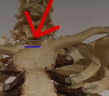
- Body
- Xiphoid process
- Sternal angle between manubrium and body (here sternum changes angle a bit); at the level of the second costal cartilage
- Ribs (12 bones): 1-7 are true ribs, connected to the sternum, through the costal cartilage, 8-10 are false ribs (connect to costal cartilage that connects to #7, 11-12 are floating ribs (not connected to sternum at all)
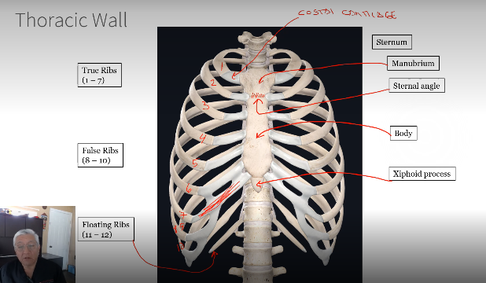
- Head, Neck, Tubercle, Neck (narrow btw), Angle (the curvature of rib)
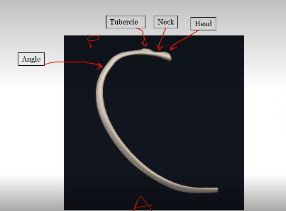
- Head starts posterior, runs anteriorly (the shaft, long end of the rib)
- Dermatones (cutaneous innervation)
- Spinal nerves
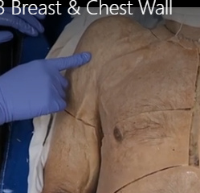
- C6
- C7
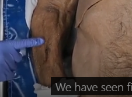
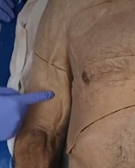
C8
- Nipple is T4
- T1:
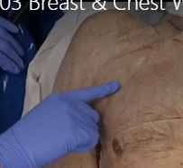
- xiphisternal is T7
- Naval is at T10
- Lumbar L1-L5
- Sacral S1-S5
- Coccygeal: Co1
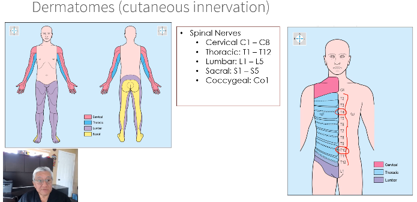
- Pectoralis major, fibrons septa, fat, glandular tissue, areola, nipple
- Glandular tissue separated by lines (connective tissue) touches the membrane covering the pectoralis major muscle
- Nipple/areola darker skin
- Pectoralis major
- Attachments: Sternum, medial half of clavicle, upper costal cartilages, and humerus
- Shoulder adduction/flexion, and medial rotation of the shoulder
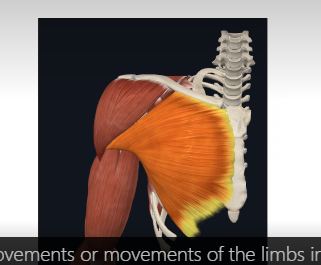
- Pectoralis minor: attached to coracoid process of scapula, and 3rd, 4th, and 5th rib (or 2-4)
- Deltoid (the triangle shoulder cap muscles basically)
- B/w deltoid and pec major -> deltopectoral groove
- Where phallic vein is located
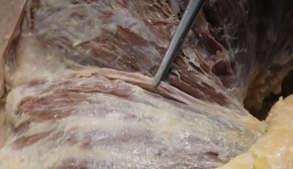
- Serratus anterior (muscle again)
- Attached to medial border of scapula and ribs 1-8
- Inntervation: long thoracic nerve
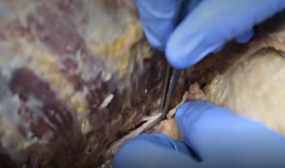
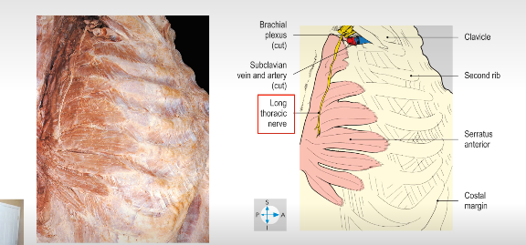
- Action: protraction of scapula
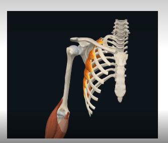
- External intercostal and internal intercostal
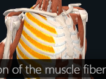
(external) -> inhalation
- Direction of muscle fibers: lateral to medial and from superior to inferior, putting hands in pocket
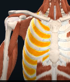
(internal) -> expiration
- Opposite direction (putting hands up on my chest)
Diaphragm
- Separates thoracic cavity from abdominal cavity
- Main respiratory muscle, contraction is inhalation, relaxation is exhalation
- Innervation: phrenic nerve (comes from cervical area of the spinal cord)
- C3, C4, C5 keep the diaphragm alive (where phrenic nerve innervates from)
- 3 openings: esophagus, aorta, inferior vena cava
- Inferior vena cava: from the thorax to the abdomen, then to the thorax
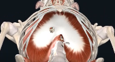
Intercostal neurovascular structures (blood vessels and nerves between ribs)
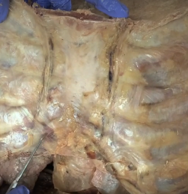
internal thoracic vessels running parallel (like I I ), branch off to give to intercostal vein/artery, and right beneath that is innervation- Intercostal artery
- Intercostal vein
- Intercostal nerve
- Runs along the rib along inferior border of the rib
- Aorta:
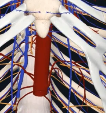
(posterior view) 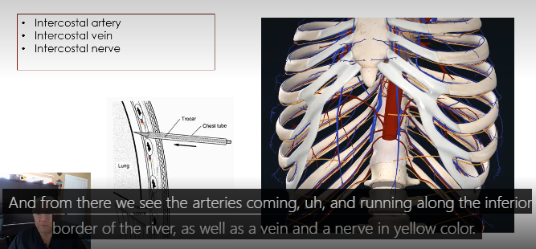
Thoracic cavity (lungs and heart)
- Two pleural cavities (where lungs are)
- In center, mediastinum (space in center, where heart is)
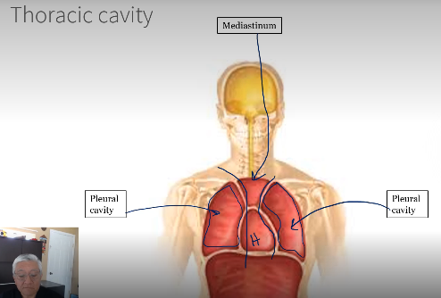
- Pleura
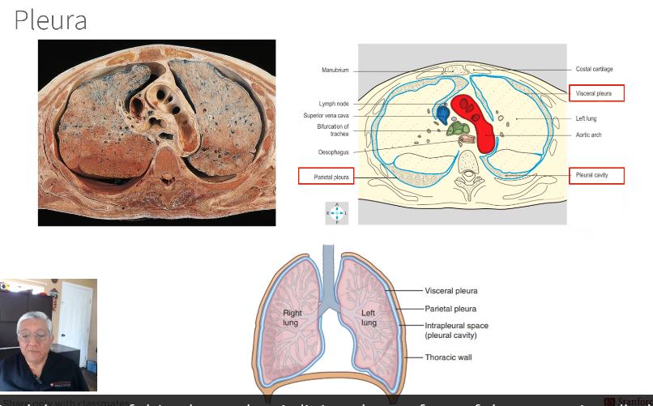
- Visceral pleura: lines surface of organ (directly to lungs) -> makes lungs shiny
- Parietal pleura: lines inside of thoracic wall, lines chest wall
- Pleural cavity
- Right lung has three parts, left lung has two (lobes) (KNOW WHAT RIGHT VS LEFT LUNG LOOK LIKE)
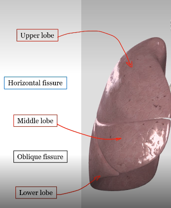
(right)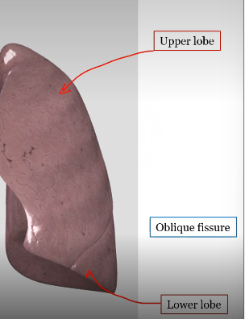
(left)- Horizontal and oblique fissure in right, only oblique in left
Where the pulmonary artery is in relation to bronchus is RALS -> right anterior, left superior
- On right lung, bronchus surrounded by ring of thick cartillage
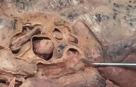
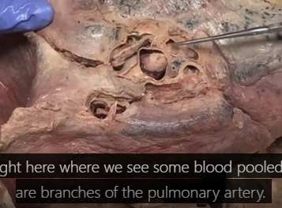
anterior to the bronchus that is on the right side (3 holes for pulmonary artery)- On both left and right lung -> pulmonary veins (2 holes )are inferior
- Pulmonary artery is located superior to bronchus
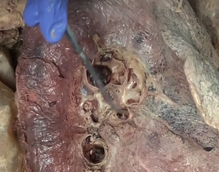
pulmonary veins on left lung, inferior
- Three parts, anterior, middle, and posterior
- Middle: heart is here
- Anterior: thymus, fat tissue
- Posterior: descending aorta, esophagus, azygos vein, nerves, lymphatics
- Inferior mediastinum
- This division happens at the level of the thoracic vertebra, T4 (number 4)
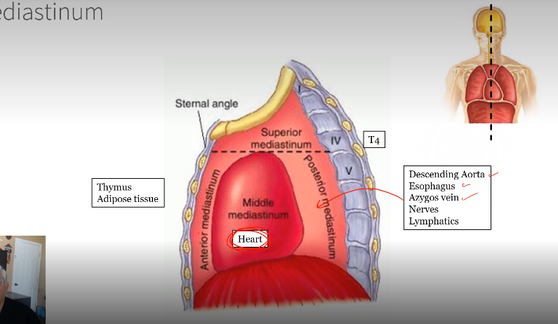
- Inferior mediastinum (heart)
- Membrane with two parts: visceral and parietal (fibrous pericardium)
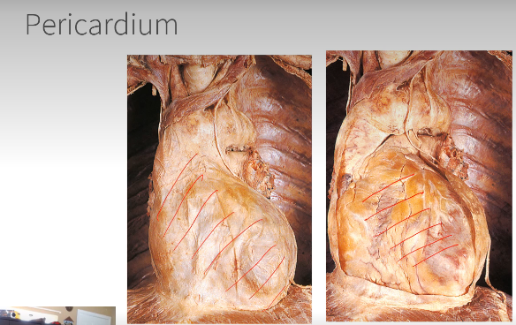
(right image = visceral)- Space between that outer layer to the heart = pericardial cavity
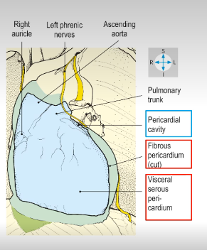
External features of the heart
- Aorta, superior vena cava, pulmonary veins, right atrium, right atrial appendage
- Blood enters into right atrium from body through superior and inferior vena cava -> right atrium to right ventricle -> sends blood into lungs through pulmonary arteries (travels out of right ventricle into pulmonary trunk) -> separates into right and left pulmonary arteries going into the lungs
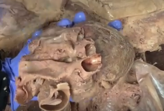
(pulmonary arteries, the right is on left, left is on right. Look at it from the pulmonary trunk!)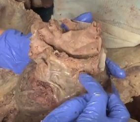
(pulmonary veins on back of heart, two for each left and right side of heart)
- When blood flows into left atrium, flows into left ventricle, leaves heart through aorta, goes into descending aorta to rest of body
- Pulmonary trunk, left atrial appendage, left ventricle, inferior vena cava, right ventricle
- In between right and left ventricle: vessels, artery and vein (left coronary vessels)
- Blood vessels (big ones), vena cava both drain into the blood to the right atrium (all connected to the heart)
- Aorta: big vessels (pulmonary trunk connects to right ventricle)
- Pulmonary veins: connect and drain blood to the left atrium (posterior view)
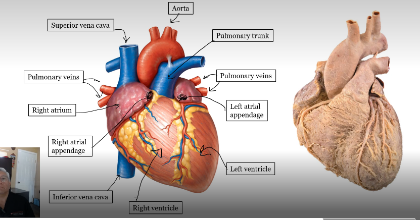
- Coronary vessels
- Branches from aorta
- Run downward, anteriorly
- Between left and right ventricle, divide into two branches
- Anterior interventricular artery (left anterior descending, LAD)
- Circumflex artery (goes posterior, goes around the heart, like a crown)
- Branches from aorta
- Goes between right atrium and right ventricle
- Posterior aspect, in the posterior aspect of heart, it gives two branches
- Right marginal (runs along inferior border of right ventricle)
- Posterior interventricular artery (can be from both left and right, depending on anatomical variation)
- Runs along the left anterior descending
- Runs along the posterior interventricular artery
- Drain into the right atrium
- receives blood from middle cardiac vein
Anastomosis
- Connection between two blood vessels
- Three types: arterial (artery-artery), venous (vein-vein), and ateriovenous
- Arterial/venous: R3 to R3 (straight connection)
- Arteriovenous: artery-vein (like U-shape connection)
- PIVA can anastomosis with right coronary artery or with the circumflexion artery from left coronary artery
Thorax 2
Session Goal(s):
Identify, describe structures, and discuss clinical correlates of (1) chambers of the heart,
(2) heart conducting tissue and heart sounds, (3) posterior mediastinum, (4) sympathetic
chain, (5) superior mediastinum, and (6) scalenus anterior, vessels and nerves of root of
neck.
Key Words:
Chambers of the heart, conducting tissue, heart sounds, posterior mediastinum,
sympathetic chain, superior mediastinum, scalenus anterior, vessels in root of neck,
nerves in root of neck
Learning Objectives:
At the end of the session the students will be able to:
Topic: Chambers of the Heart
1. Describe the internal features of the chambers of the heart.
Topic: Cardiac Conducting Tissue
2. Describe the location of the conducting tissues of the heart.
3. Explain its functional significance.
Topic: Heart Sounds
4. Describe the best locations on the surface of the thorax to listen to heart
sounds generated by the valves of the heart.
Topic: Posterior Mediastinum
5. Describe the location of the posterior mediastinum.
6. Identify the structures which constitute the posterior mediastinum.
Topic: Sympathetic Chain
7. Identify the sympathetic chain in the thorax.
Topic: Superior Mediastinum
8. Describe the location of the superior mediastinum.
9. Identify the structures which constitute the superior mediastinum.
Topic: Scalenus Anterior
10. Describe the location and attachments of scalenus anterior.
Session Description and Learning Objectives
Anatomy for Bioengineers BioE 51 Spring 2026
Topic: Vessels in the root of the neck
11. Name the veins at the root of the neck and describe their arrangement.
Name the arteries in the root of the neck and describe their arrangement.
Topic: Nerves in the root of the neck
12. Identify the phrenic, vagus and recurrent laryngeal nerves.
13. Identify the roots of the brachial plexus.
Chambers of the heart
- Left atrium is not shown completely here because it is posterior
- KNOW WHAT IS CONNECTED TO WHAT
- Pulmonary trunk connected to right ventricle
- Aorta connected to left ventricle
Coronal section of heart
- Pulmonary veins connect to left atrium/aorta
- Valves in between chambers
- Tricuspid valve between RA/RV
- Bicuspid/mitral valve between LA/LV
- Pulmonary valve between RV and pulmonary trunk
- Aortic valve between LV and aorta
- Blood comes from superior/inferior vena cava to RA, then goes to RV through tricuspid valve (deoxygenated blood given it comes from vena), then RV to pulmonary valve toward the pulmonary trunk, left and right pulmonary arteries to lungs (to get oxygenated)
- Oxygenated blood then comes back to heart through pulmonary veins, to LA, through mitral valve to LV, then through aortic valve to the aorta, then distributed through the whole body
- LV is VERY thick, compared to RV
Right atrium
- Pectinate muscle -> cardiac muscle distributed in a specific arrangement
- Right auricle -> additional space provided by right atrium space for additional blood sometimes
- Fossa ovalis -> vibration that used to a foreman that is an opening that connects the right to left atrium in fetal life
- Coronary sinus drains into RA
Right ventricle
- Chordae Tendineae -> fiber strings that connect the tricuspid valve to pillars of cardiac muscle called papillary muscle
- Wall of right ventricle has particular arrangement (trabeculae carneae)
- Blood from RV leave through pulmonary valve
Left atrium
- Very smooth walls
- Left auricle, aortic valve, bicuspid valve, cordae tendineae/papillary muscles (thicker and bigger than right ventricle)
- Wall of LV has this trabecular carneae as well
- Only bicuspid/mitral valve have two leaflets, others have three
- Walls that separate ventricles is called septum
- Aortic and pulmonary valves are the heart's two semilunar valves
- The mitral and tricuspid valves are the two specific types of atrioventricular (AV) valves in the human heart
Cardiac conducting tissue
- Cardiac tissue has its own cells that does their own electrical conduction system to contract muscles/stimulate them (specialized cells generates impulses that determine HR and rhythm)
- Conducting system: Sinuatrial node (SA), Atrioventricular (AV) node, Atrioventricular bundle (bundle of His) -> branch into Left bundle branch or right bundle branch
- SA note makes electrical impulses that spread out all both atria, then go to AV, conducted to ventricle (HR/rhythm)
Heart valves and flow of blood
- Valves stop blood from flowing back (ideally goes one direction, to lung or from lung)
- Heart sounds are from closure of these valves
- First one: lubb (closure of AV valves), stronger sound
- Second one: Dupp (closure of semilunar valves), has different tune
Heart sound
- Mitral valve: 5th intercostal space at midclavicular line
- Tricuspid: 5th intercostal space left border of sternum
- Aortic: 2nd intercostal space right border of sternum
- Pulmonary valve: 2ndd intercostal space left border of sternum
Posterior mediastinum
diaphragm at T12
- Heart inside pericardium, both lungs (left side)
- Right side
- Where is pharynx to stomach connection?
- Sympathetic chain also called chain of ganglia
- Thoracic duct -> lymphatic system (connects/drains upward to subclavian vein), thoracic duct brings length from lower part of body to subclavian vein upward; posterior to esophagus
- Vagus nerves (10th cranial nerve)
- Makes up part of the esophageal plexus and provides parasympathetic innervation
- Azygos vein: arches at T4, at right of the vertebral column
- The hemiazygos vein drain into azygos vein
Superior mediastinum - veins
- Right/left internal jugular vein bringing blood from head
- Left internal jugular vein connect to subclavian vein, bringing blood from upper limb
- Create the left brachiocephallic vein
- Same thing for right side but right side bits instead
left longer
- Right/left brachiocephallic vein -> superior vena cava -> RA
Superior mediastinum - arteries
Right side -> comes from one trunk, left-side, comes from straight aorta
- Ascending aorta makes an aortic arch, this arch goes to descending aorta
- Three branches arise from aortic arch -> brachiocephallic trunk, left common carotid (to head), left subclavian (to upper lip)
- On right side, the brachiocephallic trunk gives place to two branches -> right common carotid, right subclavian (to upper lip)
DO WE NEED TO KNOW BRANCHES OF SUBCLAVIAN??
Scalenus anterior (neck area)
- Attachments: cervical vertebrae and 1st rib (scalene tubercle)
- The subclavian artery runs behind the scalenus anterior, while the subclavian vein runs anterior to the scalenus anterior
- Phrenic nerve innervates diaphragm/percardium too, arises from cervical segment of spinal cord, runs all the down anterior to scalenus anterior, through thorax, all the way to diaphragm
Nerves in the root of the neck
- Left vagus, right vagus, running down to the thorax, cranial nerve 10
- Gives 1 branch each, respectively left recurrent laryngeal and right recurrent laryngeal
- Left one around aortic arch, right one around subclavian
- Both running next to trachea to the larynx, important to innervation of larynx and vocal cords
Upper Limb 1
Session Goal(s):
Identify, describe structures, and discuss clinical correlates of (1) osteology of clavicle,
scapula, humerus, (2) shoulder joint complex, (3) muscles of the shoulder, (4) muscles of
the rotator cuff, (5) brachial plexus, and (6) muscles of anterior and posterior
compartments of arm, (8) arteries and nerves of the arm,
Key Words:
Osteology, clavicle, scapula, humerus, shoulder, trapezius, latissimus dorsi, levator
scapulae, rhomboids, deltoid, axillary nerve, teres major, long head of triceps, rotator
cuff, supraspinatus, infraspinatus, teres minor, subscapularis, axilla, axillary artery,
axillary vein, brachial plexus, biceps, brachialis, coracobrachialis, triceps, axilla, and
brachial artery
Topic: Osteology of Clavicle, Scapula, Humerus
1. Describe the features of the clavicle.
2. Describe the features of the scapula.
3. Describe the features of the proximal end of the humerus.
4. Explain the difference between the surgical and anatomical necks of the humerus.
Topic: Muscles of the Shoulder
5. Identify trapezius and describe its attachments and function.
6. Identify latissimus dorsi and describe its attachments and function.
7. Identify levator scapulae and describe its attachments and function.
8. Identify the rhomboids and describe their attachments and function.
9. Identify the deltoid and describe its attachments, innervation and function.
10. Identify teres major and describe its attachments.
11. Identify the long head of triceps and describe its attachments, innervation and function.
Topic: Muscles of Rotator Cuff
12. Identify the muscles that comprise the rotator cuff.
13. Describe the functions of the rotator cuff muscles.
14. Name the attachments of the rotator cuff muscles.
15. Clinical Application: Describe the action of supraspinatus during abduction.
Topic: Brachial Plexus
17. Describe the formation and component parts of the brachial plexus.
18. Identify the major nerves which are branches of the brachial plexus.
Topic: Muscles of Arm
19. Identify the four muscles of the arm.
20. Describe the attachments, innervation, and function of each muscle.
Topic: Arteries and Nerves of the Arm
21. Describe the course of the main arteries and nerves of the arm
Upper limb
- Shoulder, Arm, Elbow, Forearm, Carpal region (wrist), Hand
Bones of shoulder
- Clavicle (blue), Scapula (yellow), Humerus (red)
- Clavicle (two ends): sternal end (articulates with sternum and sternoclavicular joint), acromial end (articulates with scapula and acromioclavicular joint, or AC joint)
- Scapula
- Medial border, Glenoid activity (articulate surface for head of humerus), Acromion (where clavicle articulates with scapula and AC joint), coracoid process (bony landmark for attachment of muscles, anterior projection of scapula), spine divides scapula into supra/infraspinous fossa
- Head, anatomical neck, surgical neck (because humerus usually fractures at this point), greater tubercle, lesser tubercle (tubercles are important attachment point for muscles)
Muscles of the shoulder
- Attachments: Occipital bone of head, Clavicle, Spine of scapula, Thoracic vertebrae (light yellow line)
- Superior fibers: elevate scapula, middle fibers retract scapula, inferior depress scapula
- Latissimus dorsi (large muscle located in back)
- Attachments: spinous process of thoracic and lumbar vertebrae, and humerus
- Function: extension, ADDuction, and medial rotation of arm at shoulder joint
- Depicted in muscle on left smaller image too
- Attachments: medial border of scapula, cervical vertebrae
- Function: elevation of scapula
- Rhomboid minor and rhomboid major
- (smaller one is minor, bigger one is major)
- Attachments: medial border of scapula, thoracic vertebrae
- Function: ADDuction (retraction) of scapula
- Attachments: posterior surface of scapula, humerus
- Function: extension and ADDuction of arm at shoulder joint
- anterior part
- middle part
- posterior part
- Attachments: anteriorly in clavicle, acromion and spine of scapula posteriorly, humerus
- Function: Abduction of shoulder
- Attachments: supraspinous fossa of scapula, greater tubercle of humerus
- Function: initiate shoulder abduction
- Attachments: Infraspinous fossa of scapula, greater tubercle of humerus
- Function: Lateral rotation of arm at shoulder
- Attachments: Posterior surface of scapula, greater tubercle of humerus
- Function: Lateral rotation of arm at the shoulder
- Attachments: Anterior surface of scapula, lesser tubercle of humerus
- Function: Medial rotation of the arm at shoulder (makes sense since its located anteriorly, opposes posterior muscles)
- Attachments: Coracoid process of scapula (short head), supraglenoid tubercle of scapula (long head) followed by a long tendon, radius bone in the forearm
- Functions: Supination of forearm, flexion of elbow
- Attachments: Humerus, Ulna bone in forearm
- Function: Flexion of elbow
- Coracobrachialis (auxillary or accessory muscle)
- Attachments: Coracoid process of scapula, humerus
- Function: Flexion and ADDuction of shoulder
- (long and lateral head)
- (medial head)
- Attachments: Scapula (long head), Humerus (lateral and medial head), Ulna
- Function: Extension of elbow
Brachial Plexus (nerves)
- Nerves of upper limb all come from brachial plexus, motor and sensory innervation
- C5, C6, C7, C8, T1 (roots, where everything starts)
- (going from cervical vertebrae to upper limb)
- C5, C6, C7 goes along and C8 connects to T1 -> determine three trunks: upper, middle and lower -> anterior and posterior dvisions (which then determine cords, lateral, medial, posterior) -> terminal nerves (Ulnar, Radial, Medial, Musculocutaneous)
- Radial nerve is posterior (of hand) -> runs in between long and lateral head of tricep
- Blood vessels (especially arteries) of upper limb begins with axillary artery, which is extension of subclavian artery, when get past axilla called brachial artery -> breaks into two arteries (radial and ulnar)
Upper Limb 2
Session Goal(s):
Identify, describe structures, and discuss clinical correlates of (1) the elbow joint, (2)
Bones and flexors of the forearm, (3) carpal tunnel, and (4) the superficial palmar surface
of hand (5) the intrinsic muscles of the hand, (6) long flexor tendons of the hand, (7)
extensor muscles and tendons of the hand.
Key Words:
Elbow joint, flexors of the forearm, carpal tunnel, thenar, hypothenar, intrinsic
muscles, long flexor tendons of the hand, extensor tendons of the hand,
extensor muscle group
Topic: Elbow Joint
1. Classify the elbow joint according to its type and mobility.
2. Describe the parts of the elbow joint.
Topic: Bones and Flexors of Forearm
1. Name and describe the bones of the forearm
2. Name the muscles that comprise the three layers of the forearm.
3. Describe their attachments, innervation, and function.
Topic: Carpal Tunnel
4. Describe the boundaries and components of the carpal tunnel.
5. Clinical Application: Explain the concept of carpal tunnel syndrome.
Topic: Superficial Palmar Surface of Hand
6. Describe the superficial palmar surface of hand, including palmar
aponeurosis.
7. Describe the sensory innervation of skin on palmar side of hand.
8. Describe vascular supply of hand.
Topic: Long Flexor Tendons of the hand (Extrinsic structures)
9. Describe the relative arrangement of FDP and FDS tendons in the wrist and
hand.
10. Describe the attachments of the FDP and FDS tendons in the fingers.
Session Description and Learning Objectives
Anatomy for Bioengineers BioE 51 Spring 2026
Topic: Intrinsic structures of the hand
11. Identify the intrinsic muscles of the hand.
12. Describe the course of the nerves and arteries in the hand.
Topic: Extensor muscles of the forearm
13. Describe the extensor group of muscles of the forearm.
14. Identify extensor tendons at the wrist joint and in the digits.
Elbow Joint
- Articulation from: humerus to arm, radial and ulna from the forearm
- Lateral epicondyle, medial epicondyle
Bones of Forearm
- Radius, Ulna
- Olecranon process of ulna (attached to triceps)
- Head of Radius, radial tuberosity (attachment for biceps)
- Helps with supination and pronation
Bones of Hand
- Phalanges, Distal, Middle, Proximal, Metacarpals, Carpals, Ulna, Radius
- Metcarpal 1, 2, 3, 4, 5
- Thumb only has proximal and distal phalange
Anterior compartment of forearm (1st layer)
- Attached: Medial epicondyle (humerus), radius
- Attached: medial epicondyle, 2nd and 3rd metacarpals
- Attached: Medial epicondyle, palmar aponeurosis
- Attached: Medial epicondyle, carpals
2nd layer
- Flexor digitorum superficialis (FDS)
- Attachments: Medial epicondyle, middle phalanges (4 fingers)
- Attachments: radius, distal phalanx of thumb
- Flexor digitorum profundus (FDP)
- Attachments: Ulna, Distal phalange
- Pronator quadratus (deepest), goes from radius to ulna
Distal attachment of FDS and FDP
Posterior Compartment of Forearm
- Brachioradialis, Extensor Carpi Radialis Longus, Abductor pollicis longus (runs diagonally), Extension pollcis brevis (more distal, runs diagonally too), Extensor pollicis longus, Extensor Carpi Radilais brevis, extension digitorum, extension digiti minimi, extension carpi ulnaris
- Pollicis -> thumb (also usually more deeper layer)
- Flexor Pollicis Brevis
Hand and Wrist
- Palmar Aponeurosis
- Hypothenar Muscles
- Flexor Retinaculum (membrane that will hold all the tendons)
- Extension retinaculum
- Thenar Muscles
Carpal Tunnel
- Green circles = tendons, yellow circle = nerve (median nerve)
Intrinsic Muscles of the Hand
- Dorsal interossei -> DAB Abduction (4 fingers)
- Palmar Interossei -> PAD Adduction (present in only three fingers)
Arteries of Hand
- Ulnar Artery, Radial Artery (connect to each other, via anastomosis) -> Superficial palmar arch, deep palmar arch (deeper layer)
Innervation of Hand
- Median nerve, Ulnar nerve, Radial nerve
- Recurrent branch of median nerve